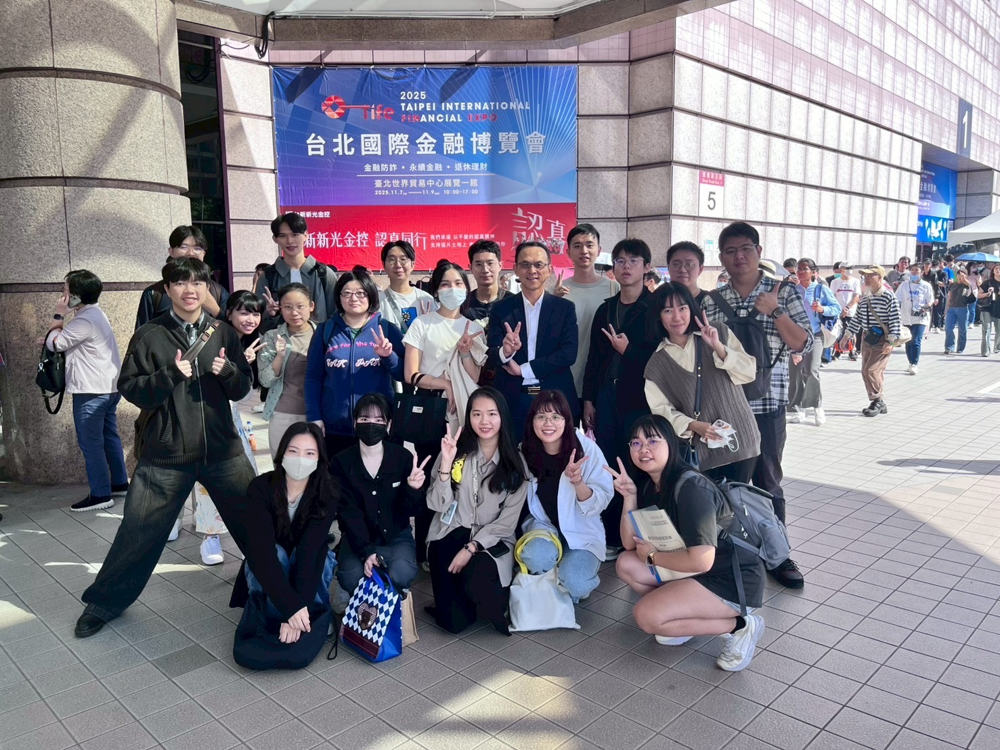

<!DOCTYPE html>
<html lang="zh-TW">
<head>
    <meta charset="UTF-8">
    <meta name="viewport" content="width=device-width, initial-scale=1.0">
    <meta name="robots" content="noindex,nofollow">
    <title>殷可盈 | NTU Application Profile</title>
    <script src="https://cdn.tailwindcss.com"></script>
    <script crossorigin src="https://cdnjs.cloudflare.com/ajax/libs/react/18.2.0/umd/react.production.min.js"></script>
    <script crossorigin src="https://cdnjs.cloudflare.com/ajax/libs/react-dom/18.2.0/umd/react-dom.production.min.js"></script>
    <script src="https://cdnjs.cloudflare.com/ajax/libs/babel-standalone/7.23.4/babel.min.js"></script>
    
    <link href="https://fonts.googleapis.com/css2?family=Noto+Sans+TC:wght@300;400;500;700&family=Lora:ital,wght@0,400;0,600;1,400&display=swap" rel="stylesheet">
    
    <style>
        body { 
            font-family: 'Noto Sans TC', sans-serif; 
            background-color: #ffffff;
            color: #2d3748;
            line-height: 1.8;
            -webkit-font-smoothing: antialiased;
            font-size: 17px; 
        }
        h1, h2, h3, .serif-font { 
            font-family: 'Lora', 'Noto Sans TC', serif; 
        }
        .section-border { 
            border-top: 1px solid #edf2f7; 
        }
        .gallery-grid {
            display: grid;
            grid-template-columns: repeat(auto-fill, minmax(240px, 1fr));
            gap: 1.5rem;
        }
        @keyframes fadeIn {
            from { opacity: 0; transform: translateY(8px); }
            to { opacity: 1; transform: translateY(0); }
        }
        .animate-fade-in {
            animation: fadeIn 0.35s ease-out forwards;
        }
    </style>
</head>
<body>
    <div id="root"></div>

    <script type="text/babel">
        const { useState, useEffect } = React;

        const data = {
            zh: {
                name: "殷可盈",
                title: "永續管理師 Coco",
                email: "yinkoying.yky@gmail.com",
                nav_cv: "個人簡歷",
                nav_projects: "專案實務",
                nav_gallery: "學習剪影",
                nav_menu: "選單",
                section_bio: "相關經歷",
                section_interests: "研究方向",
                section_proposal: "研究構想",
                section_ai_practice: "AI 新秀培訓專班",
                section_awards: "競賽紀錄",
                section_qualifications: "專業證照",
                section_overseas: "青年百億海外圓夢基金計畫",
                section_education: "學歷背景",
                section_experience: "工作經歷",
                section_language: "英文能力",
                toeic: "TOEIC 720",
                quote_text: "「你的所作所為都會帶來影響，而你要決定，想帶來哪一種影響。」",
                quote_author: "— Jane Goodall 珍古德",
                view_detail_btn: "查看詳細說明",
                view_project_btn: "查看作品",
                award_project: "作品",
                close_modal: "關閉",
                qual_esg: "永續與氣候治理",
                qual_tech: "資訊科技與人工智慧",
                qual_finance: "金融與專案管理",
                gallery_all: "全部剪影",
                gallery_awards: "競賽發表",
                gallery_projects: "工作日常",
                gallery_overseas: "海外見習",
                
                interests: [
                    "跨部會氣候治理",
                    "環境政策評估",
                    "企業永續揭露",
                    "公正轉型與碳定價"
                ],
                proposal_title: "跨部會氣候政策下企業合規負擔的分配效果：臺灣上市櫃公司之分析",
                proposal: [
                    "臺灣的淨零轉型不僅透過環境部的碳費、碳盤查與減量制度推動，也由金管會的永續資訊揭露與金融監理措施加以強化。這些制度改變了企業取得資訊、組織專業、完成確信與回應市場期待的方式；然而，相關負擔未必由所有上市櫃公司平均承擔。企業規模、產業位置、排放特性與既有治理資源的差異，可能使部分企業更容易回應制度，也可能使部分企業承受較高的轉型壓力。",
                    "本研究將以分配效果（distributional effects）與公正轉型（just transition）為分析視角，結合跨部會政策文件、上市櫃公司的年報、永續報告書及財務資料，檢視企業在碳盤查、外部確信、永續揭露與氣候治理機制上的因應情形。研究將比較不同規模、產業與排放特性企業，觀察揭露完整性、外部確信與專責治理安排等可由公開資訊辨識的代理指標，是否呈現系統性差異，而不直接推估個別企業的實際合規成本。",
                    "本研究不將企業合規負擔簡化為單一成本，而關注碳定價、資訊揭露與金融監理如何共同影響企業的轉型能力與資源分配。期望提出能將政策協調、分級支持與資訊可近性納入治理設計的建議，使氣候政策兼具減碳效益與公正轉型的方向。"
                ],
                ai_practice: "2025 年中我參與臺北大學與經濟部合作之「AI 新秀培訓專班」的 300 小時培訓，課程涵蓋生成式 AI 金融服務、金融數據管理、雲端金融平台架構、金融系統開發及自然語言處理。其後，我將所學運用於多項永續與氣候行動競賽，透過網頁應用程式開發社區微氣候韌性決策、CCUS 淨零策略模擬、低碳循環與綠色金融等工具，嘗試將複雜的氣候資料與制度議題轉化為可理解、可操作的應用。",
                
                bio: [
                    "我曾在國立臺北大學企業永續發展研究中心擔任研究助理，參與臺灣永續評鑑，審閱逾千份上市櫃公司永續報告書，累積企業公開揭露資料的檢視與整理經驗。",
                    "在新系環境技術擔任專案工程師時，我協助中小企業依 ISO 14064-1 與 ISO 14067 進行溫室氣體與產品碳足跡盤查，接觸企業資料整備、外部查證與內部溝通的實務流程，也看見不同資源條件的企業面對相同制度要求時，會有不同的因應能力。另曾派駐環境部氣候變遷署，從政府專案執行現場觀察環境部、金管會及其他部會在制度推進與資料銜接上的協調需求。",
                    "自 2026 年 9 月起，我將在永豐商業銀行擔任營管企劃，關注公平待客與金融友善之國內外趨勢，協助獎項報獎、自評作業及相關專案規劃與管理。我期待透過總行制度規劃與跨部門協作的實務，進一步理解金融機構如何將監理要求、內部治理與服務包容性轉化為可執行的工作。",
                    "這些經驗讓我注意到，當碳盤查、查證與永續揭露等要求同步推進時，不同規模與資源條件的企業，在資訊整備、查證與內部治理上可能面臨不同的因應負擔。為將實務觀察轉化為可檢驗的研究問題，我希望透過研究所的環境政策、制度分析與實證方法訓練，進一步探討跨部會氣候治理對企業轉型的影響。"
                ],

                education: [
                    { school: "國立臺北大學", dept: "公共行政暨政策學系研究所", degree: "", period: "2022 - 肄業" },
                    { school: "淡江大學", dept: "公共行政學系", degree: "學士", period: "2018 - 2021" }
                ],

                experience: [
                    { role: "營管企劃", org: "永豐商業銀行", period: "2026.09 - Present" },
                    { role: "專案工程師", org: "新系環境技術有限公司", period: "2026.01 - 2026.09" },
                    { role: "研究助理", org: "國立臺北大學 企業永續發展研究中心 / 民意與選舉研究中心", period: "2022.09 - 2025.12" }
                ],

                awards: [
                    { year: "2026", title: "氣候變遷創意實作競賽", project: "碳吉：社區微氣候韌性決策平台", result: "榮獲 氣候應用特別獎", org: "教育部 / 交通部中央氣象署", desc: "結合 GIS 空間風險快篩與 NbS 自然解方，建立微氣候調適與社區韌性決策支援架構。", link: "https://tanji2026.github.io/nbs/" },
                    { year: "2026", title: "第二屆 CCUS 創意教案徵選活動", project: "CCUS 淨零策略模擬器", result: "榮獲 優等獎", org: "中央大學 / CCUS 科學教育推廣計畫", desc: "建置模擬運算環境，將碳捕捉技術與政策誘因轉化為具備角色權衡機制的互動評估工具。", link: "https://tanji2026.github.io/ccus/" },
                    { year: "2026", title: "臺灣「能」- 永續能源創意實作競賽", project: "TanJi 淨零群募平台", result: "晉級複賽", org: "教育部 / 國立科學工藝博物館", desc: "分析民間小額資金參與機制，規劃淨零群募與碳抵換媒合架構。", link: "https://tanji2026.github.io/twenergy/" },
                    { year: "2026", title: "第四屆 北聯大U-STEP永續行動獎", project: "三鶯永續行：AI 智慧交通公民共創平台", result: "入圍決賽", org: "臺北聯合大學系統", desc: "探討低碳移動網絡規劃與弱勢群體移動權益保障。", link: "https://tanji2026.github.io/sanying/" },
                    { year: "2026", title: "2026 台灣仿生設計競賽", project: "MycoTanji 仿生社區碳循環系統", result: "晉級決賽", org: "台灣仿生科技發展協會 / 新北市政府", desc: "以真菌分解機制評估社區微型碳循環效益。", link: "https://tanji2026.github.io/biomimicry/" },
                    { year: "2026", title: "2026 Impact Star 青年影響力啟動賽", project: "三峽職人：手路尋蹤", result: "晉級複賽", org: "新北市政府青年局", desc: "建置互動式網頁遊戲連結傳統工坊，探討數位展示對地方文化維護之助益。", link: "https://tanji2026.github.io/sanxia/" },
                    { year: "2026", title: "2026 新北市青年氣候行動徵件", project: "碳吉圈圈：在地微型循環網絡", result: "進入決選", org: "新北市政府 / 環保局", desc: "結合 IoT 物理感測與碳氮比監測，落實社區有機廢棄物循環轉化。", link: "https://tanji2026.github.io/tanji-loop/" },
                    { year: "2026", title: "2026 IASE 影響力創新獎", project: "三峽職人：手路尋蹤", result: "入圍【青年人才】", org: "IASE 國際永續認證協會", desc: "整合地方工坊網絡與數位參與介面，評估青年推動永續實踐的可行路徑。", link: "https://tanji2026.github.io/sanxia/" }
                ],
                qualifications: {
                    esg: [
                        { issuer: "DNV", items: ["ISO 14064-1 內部查證員"] },
                        { issuer: "財團法人商業發展研究院", items: ["ISO 14064-1 溫室氣體盤查管理師", "ISO 14067 產品碳足跡盤查管理師", "永續報告書管理師"] },
                        { issuer: "AFNOR", items: ["ISO 14067 產品碳足跡主任稽核員"] },
                        { issuer: "經濟部 iPAS", items: ["淨零碳規劃管理師（中級／初級）"] },
                        { issuer: "環境部", items: ["溫室氣體盤查作業查驗人員", "環境教育人員"] },
                        { issuer: "新北市政府", items: ["低碳社區規劃師"] },
                    ],
                    tech: [
                        { issuer: "AWS", items: ["AWS Certified AI Practitioner"] },
                        { issuer: "Microsoft", items: ["Azure AI-900"] },
                        { issuer: "經濟部 iPAS", items: ["AI 應用規劃師（初級）"] },
                        { issuer: "Google Cloud", items: ["Google Cloud 學程結業"] },
                        { issuer: "電腦技能基金會（TQC）", items: ["資訊科技 Python 專業級", "Microsoft Office 專業級"] }
                    ],
                    finance: [
                        { issuer: "台灣金融研訓院", items: ["金融科技力知識檢定測驗"] },
                        { issuer: "證券暨期貨市場發展基金會", items: ["金融市場常識與職業道德", "永續發展基礎能力測驗"] },
                        { issuer: "勞動部", items: ["PMP 專案管理人才實務班"] }
                    ]
                },
                overseas: {
                    title: "115年度第一梯次・海外翱翔組 G-3-3「旅遊綠方程」",
                    desc: "教育部青年發展署透過海外見習、培訓與交流及資源支持，協助青年拓展國際視野與行動能力。獲選赴澳洲布里斯本 EarthCheck Academy 見習，研習永續旅遊認證、環境績效監測與目的地管理。",
                    video_link: "https://youtu.be/PpYg8SxHXf8?si=BNPhJUeTvJqRIijY",
                    video_text: "觀看見習紀錄影片"
                }
            },
            en: {
                name: "YIN, KO-YING",
                title: "Sustainability Manager Coco",
                email: "yinkoying.yky@gmail.com",
                nav_cv: "Curriculum Vitae",
                nav_projects: "Professional Projects",
                nav_gallery: "Gallery",
                nav_menu: "Menu",
                section_bio: "Relevant Experience",
                section_interests: "Research Focus",
                section_proposal: "Research Concept",
                section_ai_practice: "AI Rising Talent Training Program",
                section_awards: "Competition Records",
                section_qualifications: "Certifications",
                section_overseas: "Youth Overseas Dream Fund Program",
                section_education: "Education",
                section_experience: "Work Experience",
                section_language: "English Proficiency",
                toeic: "TOEIC 720",
                quote_text: "“What you do makes a difference, and you have to decide what kind of difference you want to make.”",
                quote_author: "— Dr. Jane Goodall",
                view_detail_btn: "View Details",
                view_project_btn: "View Project",
                award_project: "Project",
                close_modal: "Close",
                qual_esg: "Sustainability Governance",
                qual_tech: "IT & AI",
                qual_finance: "Finance & Project Mgmt",
                gallery_all: "All Highlights",
                gallery_awards: "Presentations",
                gallery_projects: "Work Life",
                gallery_overseas: "Apprenticeship",
                
                interests: [
                    "Cross-Ministerial Climate Governance",
                    "Environmental Policy Evaluation",
                    "Corporate Sustainability Disclosure",
                    "Just Transition & Carbon Pricing"
                ],
                proposal_title: "Distributional Effects of Corporate Compliance Burdens under Cross-Ministerial Climate Policies: An Analysis of Taiwan's Listed Firms",
                proposal: [
                    "Taiwan's net-zero transition is being advanced not only through the Ministry of Environment's carbon-fee, greenhouse-gas accounting, and emissions-reduction measures, but also through the Financial Supervisory Commission's sustainability-disclosure and financial-supervision initiatives. These policies change how firms access information, organize expertise, obtain assurance, and respond to market expectations. Yet the resulting burdens may not be shared equally across listed firms. Differences in firm size, industrial position, emissions profile, and existing governance resources may make some firms better able to respond while placing greater transition pressure on others.",
                    "Using distributional effects and just transition as analytical lenses, this study will combine cross-ministerial policy documents with annual reports, sustainability reports, and financial data from listed firms. It will examine how firms respond through greenhouse-gas accounting, external assurance, sustainability disclosure, and climate-governance arrangements. By comparing firms with different sizes, industries, and emissions profiles, the study will assess whether observable proxies in public information—such as reporting completeness, external assurance, and dedicated governance arrangements—show systematic differences. It will not directly estimate firm-specific monetary compliance costs.",
                    "Rather than reducing corporate compliance burden to a single cost measure, this study asks how carbon pricing, sustainability disclosure, and financial supervision jointly shape firms' transition capacity and the distribution of resources. It aims to offer policy recommendations that incorporate coordination, differentiated support, and access to information into climate governance, so that decarbonization can advance alongside the principles of a just transition."
                ],
                ai_practice: "In mid-2025, I completed 300 hours in the AI Rising Talent Training Program jointly delivered by National Taipei University and the Ministry of Economic Affairs. The curriculum covered generative-AI financial services, financial data management, cloud financial-platform architecture, financial-system development, and natural language processing. I subsequently applied this learning in sustainability and climate-action competitions, developing web applications for community microclimate-resilience decisions, CCUS net-zero strategy simulations, low-carbon circularity, and green-finance tools. These projects sought to turn complex climate data and institutional issues into understandable, actionable applications.",
                
                bio: [
                    "As a research assistant at National Taipei University's Center for Corporate Sustainability, I participated in the Taiwan Sustainability Evaluation, reviewing more than one thousand sustainability reports from listed companies and building experience in examining and organizing public corporate disclosures.",
                    "As a project engineer at Xinxi Environmental Technology, I supported SMEs with greenhouse-gas and product-carbon-footprint inventories under ISO 14064-1 and ISO 14067. I encountered the practical processes of corporate data preparation, external assurance, and internal communication, and saw that firms with different resource conditions respond differently to the same requirements. I was also stationed at the Climate Change Administration, Ministry of Environment, where I observed the need for coordination in institutional implementation and data alignment among the Ministry of Environment, the Financial Supervisory Commission, and other ministries.",
                    "Beginning in September 2026, I will serve as an Operations & Management Planning Specialist at Bank SinoPac, monitoring domestic and international developments in fair customer treatment and financial inclusion while assisting with award submissions, internal self-assessments, and related project planning and management. I hope to learn through headquarters-level policy planning and cross-departmental collaboration how financial institutions translate supervisory expectations, internal governance, and inclusive service into executable work.",
                    "These experiences drew my attention to the differing response burdens firms may face in information preparation, assurance, and internal governance as carbon accounting, assurance, and sustainability-disclosure requirements advance in parallel. I hope to turn these practical observations into testable research questions through graduate training in environmental policy, institutional analysis, and empirical methods, with a focus on how cross-ministerial climate governance affects corporate transition."
                ],
                education: [
                    { school: "National Taipei University", dept: "Graduate Institute of Public Administration & Policy", degree: "", period: "2022 - Incomplete" },
                    { school: "Tamkang University", dept: "Department of Public Administration", degree: "B.A.", period: "2018 - 2021" }
                ],
                experience: [
                    { role: "Operations & Management Planning Specialist", org: "Bank SinoPac", period: "2026.09 - Present" },
                    { role: "Project Engineer", org: "Xinxi Environmental Technology Co., Ltd.", period: "2026.01 - 2026.09" },
                    { role: "Research Assistant", org: "Center for Corporate Sustainability / Election and Public Opinion Study Center, NTPU", period: "2022.09 - 2025.12" }
                ],
                awards: [
                    { year: "2026", title: "Climate Change Creative Practice Competition", project: "TanJi: Community Microclimate Resilience Decision Platform", result: "Won Special Award", org: "MOE / CWA", desc: "Developed a decision-support platform utilizing GIS risk screening and NbS for community climate resilience.", link: "https://tanji2026.github.io/nbs/" },
                    { year: "2026", title: "2nd CCUS Creative Lesson Plan Selection", project: "CCUS Net-Zero Strategy Simulator", result: "Won Excellence Award", org: "NCU / CCUS Science Education Program", desc: "Engineered an interactive CCUS net-zero strategy simulator translating policy into role-based tools.", link: "https://tanji2026.github.io/ccus/" },
                    { year: "2026", title: "Taiwan 'ENERGY' Sustainable Energy Competition", project: "TanJi Net-Zero Crowdfunding Platform", result: "Semi-Finalist", org: "MOE / National Science and Technology Museum", desc: "Proposed a green finance crowdfunding platform to lower the threshold for zero-carbon investments.", link: "https://tanji2026.github.io/twenergy/" },
                    { year: "2026", title: "4th USTP U-STEP Sustainability Action Award", project: "SanYing Sustainable Mobility: AI-Powered Civic Co-creation Platform", result: "Finalist", org: "University System of Taipei", desc: "Explored low-carbon commuting networks and transit equity for vulnerable groups.", link: "https://tanji2026.github.io/sanying/" },
                    { year: "2026", title: "2026 Taiwan Biomimicry Design Challenge", project: "MycoTanji Biomimicry Community Carbon Cycle System", result: "Finalist", org: "Biomimicry Taiwan / NTPC", desc: "Modeled community mycelial recycling to assess local organic carbon loops.", link: "https://tanji2026.github.io/biomimicry/" },
                    { year: "2026", title: "2026 Impact Star Youth Influence Competition", project: "Sanxia Artisan Quest", result: "Semi-Finalist", org: "NTPC Youth Dept.", desc: "Evaluated interactive web interfaces linking traditional workshops with regional revitalization.", link: "https://tanji2026.github.io/sanxia/" },
                    { year: "2026", title: "2026 New Taipei City Youth Climate Action Campaign", project: "TanJi Loop: Local Micro-Circular Network", result: "Finalist", org: "NTPC Government / EPB", desc: "Deployed IoT sensors and C/N ratio tracking for community organic composting.", link: "https://tanji2026.github.io/tanji-loop/" },
                    { year: "2026", title: "2026 IASE Impact Innovation Award", project: "Sanxia Artisan Quest", result: "Shortlisted [Youth Talent]", org: "IASE", desc: "Mapped local craft networks and digital participatory tools for regional sustainability.", link: "https://tanji2026.github.io/sanxia/" }
                ],
                qualifications: {
                    esg: [
                        { issuer: "DNV", items: ["ISO 14064-1 Internal Verifier"] },
                        { issuer: "Commercial Development Research Institute", items: ["ISO 14064-1 GHG Inventory Management Specialist", "ISO 14067 Product Carbon Footprint Specialist", "Sustainability Reporting Manager"] },
                        { issuer: "AFNOR", items: ["ISO 14067 Product Carbon Footprint Lead Auditor"] },
                        { issuer: "Ministry of Economic Affairs iPAS", items: ["Net-Zero Carbon Planning Manager (Intermediate / Entry)"] },
                        { issuer: "Ministry of Environment", items: ["GHG Inventory Verification Personnel", "Environmental Education Personnel"] },
                        { issuer: "New Taipei City Government", items: ["Low-Carbon Community Planner"] },
                    ],
                    tech: [
                        { issuer: "AWS", items: ["AWS Certified AI Practitioner"] },
                        { issuer: "Microsoft", items: ["Azure AI-900"] },
                        { issuer: "Ministry of Economic Affairs iPAS", items: ["AI Application Planner (Introductory)"] },
                        { issuer: "Google Cloud", items: ["Google Cloud Program Completion"] },
                        { issuer: "Computer Skills Foundation (TQC)", items: ["IT Python Professional", "Microsoft Office Professional"] }
                    ],
                    finance: [
                        { issuer: "Taiwan Academy of Banking and Finance", items: ["FinTech Knowledge Proficiency Test"] },
                        { issuer: "Securities and Futures Institute", items: ["Financial Markets Knowledge & Ethics", "Sustainable Development Basic Ability Test"] },
                        { issuer: "Ministry of Labor", items: ["PMP Project Management Practice"] }
                    ]
                },
                overseas: {
                    title: "2026 First Cohort · Overseas Soar Group G-3-3 “Travel Green Equation”",
                    desc: "A Youth Development Administration initiative that supports overseas apprenticeships, training, exchange, and resource access to help young people build international perspectives and capacity for action. I was selected for an apprenticeship at EarthCheck Academy in Brisbane, studying sustainable tourism certification, environmental performance monitoring, and destination management.",
                    video_link: "https://youtu.be/PpYg8SxHXf8?si=BNPhJUeTvJqRIijY",
                    video_text: "Watch Apprenticeship Video"
                }
            }
        };

        const professionalProjects = [
            {
                id: "proj-bank",
                org: { zh: "永豐商業銀行", en: "Bank SinoPac" },
                role: { zh: "營管企劃", en: "Operations & Management Planning Specialist" },
                period: "2026.09 - Present",
                src: "images/proj-bank.jpg",
                title: { zh: "公平待客與金融友善專案", en: "Fair Customer Treatment & Financial Inclusion Project" },
                desc: { 
                    zh: "關注公平待客與金融友善之國內外趨勢，協助獎項報獎、自評作業及相關專案規劃與管理。", 
                    en: "Monitor domestic and international developments in fair customer treatment and financial inclusion; assist with award submissions, internal self-assessments, and the planning and management of related projects." 
                },
                details: {
                    context: {
                        zh: "銀行業落實公平待客與金融友善已成為主管機關評核的重要指標，需從總行視角建立完善的內部治理與服務機制。",
                        en: "Implementing fair customer treatment has become a key governance metric, requiring robust internal mechanisms from a headquarters perspective."
                    },
                    implementation: {
                        zh: "1. 關注並分析國內外公平待客與金融友善趨勢。\n2. 參與或協助國內外公平待客與金融友善相關獎項報獎。\n3. 規劃並統籌公平待客自評作業。\n4. 規劃與管理公平待客、金融友善相關專案及重要工作。",
                        en: "1. Monitor and analyze domestic and international developments in fair customer treatment and financial inclusion.\n2. Participate in or assist with related domestic and international award submissions.\n3. Plan and coordinate internal fair customer treatment self-assessments.\n4. Plan and manage related fair customer treatment, financial inclusion, and priority initiatives."
                    },
                    reflection: {
                        zh: "期望透過這份工作，從大型金融機構的視角理解政策落地的實務挑戰，並將這份對社會包容的觀察帶入未來探討公正轉型的研究中。",
                        en: "I hope to gain firsthand insight into how large financial institutions implement top-down regulations. This will deepen my understanding of social inclusion, directly supporting my future research on the just transition."
                    }
                },
                tags: { zh: ["金融友善", "內部治理", "專案規劃"], en: ["Financial Inclusion", "Internal Governance", "Project Planning"] }
            },
            {
                id: "proj-xinxi",
                org: { zh: "新系環境技術有限公司", en: "Xinxi Environmental Technology" },
                role: { zh: "專案工程師", en: "Environmental Project Engineer" },
                period: "2026.01 - 2026.09",
                src: "images/proj-xinxi.jpg",
                title: { zh: "中小企業碳盤查輔導專案", en: "SME Carbon Inventory Consultation" },
                desc: { 
                    zh: "執行公部門計畫，實地走訪金屬加工等工廠，協助在地中小企業進行 ISO 14064-1 與 ISO 14067 碳盤查。", 
                    en: "Executed public sector programs, visiting local manufacturers to guide them through ISO 14064-1 and ISO 14067 carbon inventories." 
                },
                details: {
                    context: {
                        zh: "配合公部門的在地減碳計畫，多數傳統製造業在面對減碳要求時，普遍面臨專業人員不足與預算有限的困境。",
                        en: "In response to government decarbonization initiatives, many traditional manufacturers face severe shortages of specialized personnel and limited budgets."
                    },
                    implementation: {
                        zh: "親自走訪金屬成型等工廠，核對產線活動數據與能源耗用紀錄，協助廠方建立溫室氣體盤查清冊，並為後續的第三方查證做好準備。",
                        en: "I visited manufacturing plants to verify activity data and energy usage, helping facility managers compile accurate greenhouse gas inventories for third-party audits."
                    },
                    reflection: {
                        zh: "在第一線的輔導過程中，我深刻體會到小型工廠受限於資源，難以應付繁複的法規要求，這充分突顯了淨零轉型過程中的資源不平等現象。",
                        en: "Seeing the immense pressure that compliance places on small, under-resourced factories highlighted the reality of resource inequality during the net-zero transition."
                    }
                },
                tags: { zh: ["ISO 14064-1", "現場盤查", "中小企業輔導"], en: ["ISO 14064-1", "On-site Auditing", "SME Consultation"] }
            },
            {
                id: "proj-ntpu",
                org: { zh: "臺北大學 企業永續發展研究中心", en: "Center for Corporate Sustainability, NTPU" },
                role: { zh: "研究助理", en: "Research Assistant" },
                period: "2022.09 - 2025.12",
                src: "images/proj-ntpu.jpg",
                title: { zh: "臺灣永續評鑑與 ESG 報告書審閱", en: "Taiwan Sustainability Evaluation" },
                desc: { 
                    zh: "參與臺灣永續評鑑，審閱上千份上市櫃企業的永續報告書，整理出客觀的 ESG 揭露數據與指標。", 
                    en: "Participated in the Taiwan Sustainability Evaluation, auditing corporate sustainability reports and organizing ESG disclosure data." 
                },
                details: {
                    context: {
                        zh: "配合國家的永續資訊揭露藍圖，我們需要將國內上市櫃公司龐雜的非財務資訊，進行客觀且結構化的梳理與登錄。",
                        en: "Aligned with national sustainability disclosure roadmaps, there is a need to objectively structure the non-financial information of listed companies."
                    },
                    implementation: {
                        zh: "對照 GRI、SASB 等國際準則與主管機關的評分指標，我參與審閱了超過一千份的上市櫃企業永續報告書，並進行系統化的資料登錄。",
                        en: "I evaluated over a thousand sustainability reports against GRI, SASB, and domestic regulatory standards to build a comprehensive ESG scoring database."
                    },
                    reflection: {
                        zh: "這份工作為我建立了處理跨產業 ESG 數據的分析基礎，同時我也觀察到，大型企業與中小企業在資訊揭露的資源上有著非常顯著的落差。",
                        en: "This work built my quantitative analysis skills for non-financial data. It also revealed a stark contrast in reporting capabilities between large corporations and SMEs."
                    }
                },
                tags: { zh: ["ESG 評鑑", "永續報告書", "資料梳理"], en: ["ESG Frameworks", "Reporting", "Data Organization"] }
            }
        ];

        const galleryItems = [
            { id: 'overseas-01', category: 'overseas', src: 'images/gallery-overseas-01.jpg', caption: { zh: 'EarthCheck 總部', en: 'EarthCheck Headquarters' }, desc: { zh: '認識永續旅遊認證如何以環境、社會與治理指標，追蹤目的地與企業的永續績效。', en: 'Examined how sustainability-tourism certification uses environmental, social, and governance indicators to track the sustainability performance of destinations and businesses.' } },
            { id: 'overseas-02', category: 'overseas', src: 'images/gallery-overseas-02.jpg', caption: { zh: '南岸公園', en: 'South Bank Parklands' }, desc: { zh: '觀察河岸綠地、步行空間與公共設施的整合，思考氣候調適與宜居城市的關係。', en: 'Observed how riverside green space, walking networks, and public facilities can be integrated into an open urban landscape, linking climate adaptation with liveability.' } },
            { id: 'overseas-03', category: 'overseas', src: 'images/gallery-overseas-03.jpg', caption: { zh: '布里斯本會展中心', en: 'Brisbane Convention and Exhibition Centre' }, desc: { zh: '從大型會展場域的能源、交通與活動管理，理解永續活動降低環境衝擊的實務。', en: 'Considered how energy, transport, and event management at a major convention venue can reduce the environmental impacts of large-scale events.' } },
            { id: 'overseas-04', category: 'overseas', src: 'images/gallery-overseas-04.jpg', caption: { zh: '黃金海岸', en: 'Gold Coast' }, desc: { zh: '透過沿海都市與觀光地景，思考海岸保育、旅遊承載與地方經濟之間的平衡。', en: 'Reflected on the balance between coastal conservation, tourism carrying capacity, and the local economy in a coastal destination.' } },
            { id: 'overseas-05', category: 'overseas', src: 'images/gallery-overseas-05.jpg', caption: { zh: '陽光海岸', en: 'Sunshine Coast' }, desc: { zh: '從自然資源與觀光發展並存的區域，理解目的地管理如何兼顧生態、社區與旅客體驗。', en: 'Considered how destination management can balance ecological protection, community participation, and visitor experience where natural assets and tourism coexist.' } },
            { id: 'overseas-06', category: 'overseas', src: 'images/gallery-overseas-06.jpg', caption: { zh: '澳洲動物園', en: 'Australia Zoo' }, desc: { zh: '從野生動物保育與環境教育的展示設計，認識觀光場域提升生物多樣性意識的可能。', en: 'Explored how wildlife conservation and environmental-education design can help tourism venues strengthen public awareness of biodiversity.' } },
            { id: 'award-01', category: 'awards', src: 'images/gallery-award-01.jpg', caption: { zh: '碳吉：社區微氣候韌性決策平台', en: 'TanJi: Community Microclimate Resilience Decision Platform' }, desc: { zh: '為氣候變遷創意實作競賽開發，結合 GIS 風險篩檢與自然為本解方，協助社區進行微氣候調適與韌性決策。', en: 'Developed for the Climate Change Creative Practice Competition, this platform combines GIS risk screening with nature-based solutions to support community microclimate adaptation and resilience decisions.' } },
            { id: 'award-02', category: 'awards', src: 'images/gallery-award-02.jpg', caption: { zh: 'CCUS 淨零策略模擬器', en: 'CCUS Net-Zero Strategy Simulator' }, desc: { zh: '為第二屆 CCUS 創意教案徵選設計，將碳捕捉技術與政策誘因轉化為可操作的淨零策略選擇。', en: 'Created for the 2nd CCUS Creative Lesson Plan Selection, this interactive simulator translates carbon-capture technologies and policy incentives into net-zero strategy choices.' } },
            { id: 'award-03', category: 'awards', src: 'images/gallery-award-03.jpg', caption: { zh: '碳吉淨零群募平台', en: 'TanJi Net-Zero Crowdfunding Platform' }, desc: { zh: '為臺灣「能」永續能源創意實作競賽開發，探索群眾募資與綠色金融如何降低參與淨零投資的門檻。', en: 'Developed for the Taiwan “ENERGY” Sustainable Energy Competition, this platform explores how crowdfunding and green finance can lower participation barriers for net-zero investment.' } },
            { id: 'award-04', category: 'awards', src: 'images/gallery-award-04.jpg', caption: { zh: '三鶯永續行：AI 智慧交通公民共創平台', en: 'SanYing Sustainable Mobility: AI-Powered Civic Co-creation Platform' }, desc: { zh: '為第四屆北聯大 U-STEP 永續行動獎設計，透過 AI 輔助共創介面探討低碳交通規劃與移動公平性。', en: 'Created for the 4th USTP U-STEP Sustainability Action Award, this project explores low-carbon mobility planning and mobility equity through an AI-supported civic co-creation interface.' } },
            { id: 'award-05', category: 'awards', src: 'images/gallery-award-05.jpg', caption: { zh: 'MycoTanji 仿生社區碳循環系統', en: 'MycoTanji Biomimicry Community Carbon Cycle System' }, desc: { zh: '為 2026 臺灣仿生設計競賽開發，以真菌分解機制為靈感，評估社區尺度的碳循環潛力。', en: 'Developed for the 2026 Taiwan Biomimicry Design Challenge, this project uses fungal decomposition as a lens for assessing community-scale carbon-circulation potential.' } },
            { id: 'award-06', category: 'awards', src: 'images/gallery-award-06.jpg', caption: { zh: '三峽職人：手路尋蹤', en: 'Sanxia Artisan Quest' }, desc: { zh: '為 2026 Impact Star 青年影響力啟動賽設計，以數位體驗串聯在地工坊與文化參與，探索區域永續發展。', en: 'Created for the 2026 Impact Star Youth Influence Competition, this digital experience connects local workshops and cultural participation to explore sustainable regional development.' } },
            { id: 'award-07', category: 'awards', src: 'images/gallery-award-07.jpg', caption: { zh: '碳吉圈圈：在地微型循環網絡', en: 'TanJi Loop: Local Micro-Circular Network' }, desc: { zh: '為 2026 新北市青年氣候行動徵件開發，結合 IoT 感測與碳氮比監測，支持社區有機廢棄物循環。', en: 'Developed for the 2026 New Taipei City Youth Climate Action Campaign, this project combines IoT sensing and carbon–nitrogen ratio monitoring to support community organic-waste circularity.' } },
            { id: 'award-08', category: 'awards', src: 'images/gallery-award-08.jpg', caption: { zh: '三峽職人：手路尋蹤', en: 'Sanxia Artisan Quest' }, desc: { zh: '投件 2026 IASE 影響力創新獎，整合在地職人網絡與數位參與，檢視青年行動如何轉化為永續實踐。', en: 'Submitted to the 2026 IASE Impact Innovation Award, this project integrates local craft networks with digital participation to examine youth-led sustainability practice.' } },
            { id: 'work-01', category: 'projects', src: 'images/gallery-work-01.jpg', caption: { zh: '企業碳盤查實戰輔導計畫', en: 'Corporate Carbon Inventory Coaching Program' }, desc: { zh: '配合新北市政府經濟發展局計畫，協助企業培育碳盤查專業人才，強化面對盤查與揭露要求的實務能力。', en: 'Developed with the New Taipei City Government’s Economic Development Department, this program helped businesses build practical greenhouse-gas inventory capabilities and strengthen their readiness for inventory and disclosure requirements.' } },
            { id: 'work-02', category: 'projects', src: 'images/gallery-work-02.jpg', caption: { zh: '中小企業碳盤查輔導', en: 'SME Carbon Inventory Support' }, desc: { zh: '針對企業溫室氣體排放設備與能源使用情形進行診斷，協助中小企業將減碳需求轉化為可執行的改善方向。', en: 'Reviewed emissions-generating equipment and energy-use conditions to help SMEs translate decarbonization needs into actionable energy-efficiency improvements.' } },
            { id: 'work-03', category: 'projects', src: 'images/gallery-work-03.jpg', caption: { zh: '金管會 115 年金融教育課程', en: 'FSC Financial Education Course' }, desc: { zh: '以溫室氣體盤查及確信作業推動情形為主題，連結金融監理、企業資訊揭露與淨零轉型。', en: 'Focused on the implementation of greenhouse-gas accounting and assurance, linking financial supervision, corporate disclosure, and the net-zero transition.' } },
            { id: 'work-04', category: 'projects', src: 'images/gallery-work-04.jpg', caption: { zh: '2026 臺德氣候合作研討會', en: '2026 Taiwan–Germany Climate Cooperation Forum' }, desc: { zh: '關注碳費至排放交易制度的轉型路徑，以及國際政策工具如何支持減碳與產業轉型。', en: 'Examined pathways from carbon fees to emissions trading and how international policy instruments can support decarbonization and industrial transition.' } },
            { id: 'work-05', category: 'projects', src: 'images/gallery-work-05.jpg', caption: { zh: '企業永續報告書製作實務班', en: 'Corporate Sustainability Reporting Practice Course' }, desc: { zh: '透過臺灣永續評鑑實務分享，理解上市櫃公司永續報告書的審閱重點、揭露品質與評鑑觀察。', en: 'Used practical insights from the Taiwan Sustainability Evaluation to examine review priorities, disclosure quality, and assessment considerations in listed companies’ sustainability reports.' } },
            { id: 'work-06', category: 'projects', src: 'images/gallery-work-06.jpg', caption: { zh: 'ISO 14067 主任稽核員訓練', en: 'ISO 14067 Lead Auditor Training' }, desc: { zh: '以蜂蜜蛋糕為案例分享產品碳足跡查證流程，練習從活動數據、排放係數到查證證據的檢視邏輯。', en: 'Used a honey-cake case study to explore product-carbon-footprint verification, from activity data and emission factors to the review of verification evidence.' } }
        ];

        const App = () => {
            const [lang, setLang] = useState('zh');
            const [activeTab, setActiveTab] = useState('cv'); // 'cv', 'projects', 'gallery'
            const [galleryFilter, setGalleryFilter] = useState('all'); 
            const [selectedProject, setSelectedProject] = useState(null);
            const [selectedGalleryItem, setSelectedGalleryItem] = useState(null);

            const t = data[lang];

            const handleImageError = (e, filename) => {
                e.target.onerror = null; 
                e.target.src = `https://placehold.co/800x600/f8fafc/94a3b8?text=Image+Placeholder%5Cn[${filename}]`;
            };

            const filteredGallery = galleryFilter === 'all' 
                ? galleryItems 
                : galleryItems.filter(item => item.category === galleryFilter);

            const PlayIcon = () => (
                <svg xmlns="http://www.w3.org/2000/svg" width="18" height="18" viewBox="0 0 24 24" fill="none" stroke="currentColor" strokeWidth="2" strokeLinecap="round" strokeLinejoin="round">
                    <circle cx="12" cy="12" r="10"></circle>
                    <polygon points="10 8 16 12 10 16 10 8"></polygon>
                </svg>
            );

            const CloseIcon = () => (
                <svg xmlns="http://www.w3.org/2000/svg" width="22" height="22" viewBox="0 0 24 24" fill="none" stroke="currentColor" strokeWidth="2" strokeLinecap="round" strokeLinejoin="round">
                    <line x1="18" y1="6" x2="6" y2="18"></line>
                    <line x1="6" y1="6" x2="18" y2="18"></line>
                </svg>
            );

            const QualificationColumn = ({ title, dot, groups }) => (
                <div className="bg-white border border-gray-200 rounded-sm shadow-sm p-6">
                    <h3 className="text-[16px] font-bold text-gray-900 mb-6 flex items-center gap-2.5">
                        <span className={"inline-block w-2.5 h-2.5 rounded-full " + dot}></span>
                        {title}
                    </h3>
                    <div className="space-y-5">
                        {groups.map((group) => (
                            <div key={group.issuer}>
                                <p className="text-[11px] font-bold tracking-wide text-gray-400 uppercase mb-2.5 leading-snug">
                                    {group.issuer}
                                </p>
                                <ul className="space-y-2">
                                    {group.items.map((item) => (
                                        <li key={item} className="flex gap-2 text-[14px] font-medium text-gray-700 leading-snug">
                                            <span className="mt-[7px] w-1 h-1 rounded-full bg-gray-400 shrink-0"></span>
                                            <span>{item}</span>
                                        </li>
                                    ))}
                                </ul>
                            </div>
                        ))}
                    </div>
                </div>
            );

            useEffect(() => {
                const handleKeyDown = (e) => {
                    if (e.key === 'Escape') {
                        setSelectedProject(null);
                        setSelectedGalleryItem(null);
                    }
                };
                window.addEventListener('keydown', handleKeyDown);
                return () => window.removeEventListener('keydown', handleKeyDown);
            }, []);

            return (
                <div className="max-w-5xl mx-auto px-4 sm:px-6 py-8 sm:py-12 md:py-16">
                    
                    {/* Top Navigation */}
                    <nav className="flex justify-between items-center mb-12 border-b border-gray-200 pb-5">
                        <details className="relative lg:hidden">
                            <summary className="list-none flex items-center gap-2 cursor-pointer text-[16px] font-bold text-gray-800 select-none">
                                <svg xmlns="http://www.w3.org/2000/svg" width="21" height="21" viewBox="0 0 24 24" fill="none" stroke="currentColor" strokeWidth="2" strokeLinecap="round">
                                    <line x1="4" y1="6" x2="20" y2="6"></line>
                                    <line x1="4" y1="12" x2="20" y2="12"></line>
                                    <line x1="4" y1="18" x2="20" y2="18"></line>
                                </svg>
                                {t.nav_menu}
                            </summary>
                            <div className="absolute left-0 top-9 z-40 w-56 bg-white border border-gray-200 shadow-lg rounded-sm overflow-hidden">
                                <button onClick={(e) => { setActiveTab('cv'); e.currentTarget.closest('details').removeAttribute('open'); }} className={"w-full text-left px-4 py-3 text-[16px] font-bold border-b border-gray-100 " + (activeTab === 'cv' ? "bg-gray-50 text-gray-900" : "text-gray-500")}>{t.nav_cv}</button>
                                <button onClick={(e) => { setActiveTab('projects'); e.currentTarget.closest('details').removeAttribute('open'); }} className={"w-full text-left px-4 py-3 text-[16px] font-bold border-b border-gray-100 " + (activeTab === 'projects' ? "bg-gray-50 text-gray-900" : "text-gray-500")}>{t.nav_projects}</button>
                                <button onClick={(e) => { setActiveTab('gallery'); e.currentTarget.closest('details').removeAttribute('open'); }} className={"w-full text-left px-4 py-3 text-[16px] font-bold " + (activeTab === 'gallery' ? "bg-gray-50 text-gray-900" : "text-gray-500")}>{t.nav_gallery}</button>
                            </div>
                        </details>
                        <div className="hidden lg:flex gap-8">
                            <button 
                                onClick={() => setActiveTab('cv')}
                                className={`text-[18px] font-bold tracking-widest pb-1.5 transition-colors ${activeTab === 'cv' ? 'text-gray-900 border-b-2 border-gray-900' : 'text-gray-400 hover:text-gray-700'}`}
                            >
                                {t.nav_cv}
                            </button>
                            <button 
                                onClick={() => setActiveTab('projects')}
                                className={`text-[18px] font-bold tracking-widest pb-1.5 transition-colors ${activeTab === 'projects' ? 'text-gray-900 border-b-2 border-gray-900' : 'text-gray-400 hover:text-gray-700'}`}
                            >
                                {t.nav_projects}
                            </button>
                            <button 
                                onClick={() => setActiveTab('gallery')}
                                className={`text-[18px] font-bold tracking-widest pb-1.5 transition-colors ${activeTab === 'gallery' ? 'text-gray-900 border-b-2 border-gray-900' : 'text-gray-400 hover:text-gray-700'}`}
                            >
                                {t.nav_gallery}
                            </button>
                        </div>
                        <div className="flex gap-2.5">
                            <button onClick={() => setLang('zh')} className={`text-[15px] font-bold px-3 py-1.5 border rounded-sm transition-colors ${lang === 'zh' ? 'bg-gray-800 text-white border-gray-800' : 'bg-transparent text-gray-400 border-gray-300 hover:text-gray-700'}`}>中文</button>
                            <button onClick={() => setLang('en')} className={`text-[15px] font-bold px-3 py-1.5 border rounded-sm transition-colors ${lang === 'en' ? 'bg-gray-800 text-white border-gray-800' : 'bg-transparent text-gray-400 border-gray-300 hover:text-gray-700'}`}>EN</button>
                        </div>
                    </nav>

                    {/* Main Tab: Curriculum Vitae */}
                    {activeTab === 'cv' && (
                        <div className="animate-fade-in space-y-20">
                            
                            {/* Quotation Banner: Dr. Jane Goodall */}
                            <div className="mb-10 bg-stone-50 border-l-4 border-stone-800 p-7 md:p-8 rounded-sm">
                                <p className="text-[18px] md:text-[20px] serif-font italic text-stone-800 leading-relaxed mb-3">
                                    {t.quote_text}
                                </p>
                                <p className="text-[14px] md:text-[15px] font-bold text-stone-500 tracking-wider uppercase">
                                    {t.quote_author}
                                </p>
                            </div>

                            {/* 1. Header & Bio */}
                            <header className="flex flex-col lg:flex-row gap-12 lg:gap-16 items-start">
                                
                                {/* Left Column: Photo, Contact, Education, Experience */}
                                <div className="w-full lg:w-1/3 shrink-0 flex flex-col items-center lg:items-start">
                                    <div className="w-56 h-72 lg:w-full lg:h-80 bg-gray-100 mb-6 border border-gray-200 shadow-sm relative overflow-hidden">
                                         handleImageError(e, 'profile.jpg')}
                                        />
                                    </div>
                                    <h1 className="text-4xl font-bold mb-3 serif-font text-center lg:text-left text-gray-900">{t.name}</h1>
                                    <p className="text-[18px] font-medium text-gray-500 mb-4 text-center lg:text-left leading-relaxed">{t.title}</p>
                                    <div className="text-[16px] font-medium text-gray-600 mb-10 mx-auto lg:mx-0 text-center lg:text-left">
                                        <a href={`mailto:${t.email}`} className="text-gray-800 hover:text-blue-700 transition-colors border-b border-gray-300 pb-0.5">
                                            {lang === 'zh' ? '聯絡方式：' : 'Contact: '}{t.email}
                                        </a>
                                    </div>

                                    {/* Education section */}
                                    <div className="w-full pt-6 border-t border-gray-200 mb-10">
                                        <h3 className="text-[15px] font-bold text-gray-900 uppercase tracking-wider mb-5 flex items-center gap-2">
                                            <span className="w-2.5 h-2.5 bg-gray-800 rounded-sm"></span>
                                            {t.section_education}
                                        </h3>
                                        <div className="space-y-5">
                                            {t.education.map((edu, idx) => (
                                                <div key={idx} className="text-left">
                                                    <div className="text-[16px] font-bold text-gray-800 leading-snug">{edu.school}</div>
                                                    <div className="text-[15px] font-medium text-gray-600 leading-snug mt-1">
                                                        {edu.dept}{edu.degree ? `・${edu.degree}` : ''}
                                                    </div>
                                                    <div className="text-[14px] font-medium text-gray-400 mt-1">{edu.period}</div>
                                                </div>
                                            ))}
                                        </div>
                                    </div>

                                    {/* Experience section */}
                                    <div className="w-full pt-6 border-t border-gray-200">
                                        <h3 className="text-[15px] font-bold text-gray-900 uppercase tracking-wider mb-5 flex items-center gap-2">
                                            <span className="w-2.5 h-2.5 bg-gray-800 rounded-sm"></span>
                                            {t.section_experience}
                                        </h3>
                                        <div className="space-y-6">
                                            {t.experience.map((exp, idx) => (
                                                <div key={idx} className="text-left">
                                                    <div className="text-[14px] font-medium text-gray-400 mb-1">{exp.period}</div>
                                                    <div className="text-[16px] font-bold text-gray-800 leading-snug">
                                                        {exp.role}<span className="text-gray-400 mx-1">｜</span>{exp.org}
                                                    </div>
                                                </div>
                                            ))}
                                        </div>
                                    </div>

                                </div>

                                {/* Right Column: Academic Bio, Interests, Proposal */}
                                <div className="w-full lg:w-2/3 pt-2">
                                    {/* 相關經歷 */}
                                    <h2 className="text-[18px] font-bold text-gray-900 mb-5 flex items-center gap-2.5">
                                        <span className="inline-block w-3 h-3 bg-gray-800 rounded-sm"></span>
                                        {t.section_bio}
                                    </h2>
                                    <div className="text-[17px] text-gray-700 space-y-4 text-justify leading-relaxed font-medium mb-14 pl-1">
                                        {t.bio.map((p, idx) => <p key={idx}>{p}</p>)}
                                    </div>

                                    {/* 研究方向 */}
                                    <h2 className="text-[18px] font-bold text-gray-900 mb-5 flex items-center gap-2.5">
                                        <span className="inline-block w-3 h-3 bg-gray-800 rounded-sm"></span>
                                        {t.section_interests}
                                    </h2>
                                    <div className="flex flex-wrap gap-2.5 mb-14 pl-1">
                                        {t.interests.map((interest, idx) => (
                                            <span key={idx} className="bg-gray-100 text-gray-700 px-3 py-1.5 rounded-sm text-[15px] font-medium border border-gray-200">
                                                {interest}
                                            </span>
                                        ))}
                                    </div>

                                    {/* 研究計畫 */}
                                    <h2 className="text-[18px] font-bold text-gray-900 mb-5 flex items-center gap-2.5">
                                        <span className="inline-block w-3 h-3 bg-gray-800 rounded-sm"></span>
                                        {t.section_proposal}
                                    </h2>
                                    <div className="mb-14 pl-1">
                                        <div className="mb-6 text-[17px] font-bold text-gray-900 pb-2 border-b border-gray-200">
                                            {t.proposal_title}
                                        </div>
                                        <div className="space-y-4">
                                            {t.proposal.map((paragraph, idx) => (
                                                <p key={idx} className="text-[16px] text-gray-700 leading-relaxed text-justify">
                                                    {paragraph}
                                                </p>
                                            ))}
                                        </div>
                                    </div>
                                </div>
                            </header>

                            {/* 2. AI Training Program */}
                            <section className="section-border pt-16">
                                <h2 className="text-2xl font-bold mb-6 serif-font text-gray-900">{t.section_ai_practice}</h2>
                                <div className="bg-gray-50 border border-gray-200 rounded-sm p-7 md:p-8 flex flex-col lg:flex-row gap-6 lg:items-start">
                                    <div className="lg:flex-1">
                                        <p className="text-[17px] font-medium text-gray-700 leading-relaxed text-justify">
                                            {t.ai_practice}
                                        </p>
                                    </div>
                                    <div className="w-full lg:w-[260px] shrink-0">
                                         handleImageError(e, 'ai-rising-talent-training.jpg')}
                                            className="w-full aspect-[4/3] object-cover rounded-sm border border-gray-200 bg-white"
                                        />
                                    </div>
                                </div>
                            </section>

                            {/* 3. Awards */}
                            <section className="section-border pt-16">
                                <h2 className="text-2xl font-bold mb-8 serif-font text-gray-900">{t.section_awards}</h2>
                                <div className="grid grid-cols-1 md:grid-cols-2 gap-6 items-stretch">
                                    {t.awards.map((award, idx) => {
                                        const isWinner = award.result.includes('榮獲') || award.result.includes('Won');
                                        const cardClass = isWinner 
                                            ? "border-amber-200 bg-amber-50/40" 
                                            : "border-sky-100 bg-sky-50/20";
                                        const resultClass = isWinner 
                                            ? "bg-amber-100 text-amber-800 border-amber-200" 
                                            : "bg-sky-50 text-sky-800 border-sky-100";

                                        return (
                                        <div key={idx} className={`group border p-6 rounded-sm transition-colors flex flex-col h-full relative hover:shadow-md ${cardClass}`}>
                                            <div className="flex items-center gap-3 mb-4">
                                                <span className="text-[14px] font-bold bg-white border border-gray-200 px-2 py-0.5 text-gray-600 rounded-sm shrink-0">
                                                    {award.year}
                                                </span>
                                                <span className={`text-[14px] font-bold border px-2 py-0.5 rounded-sm ${resultClass}`}>
                                                    {award.result}
                                                </span>
                                            </div>
                                            <h3 className="text-[18px] font-bold text-gray-900 leading-snug mb-2">
                                                {award.title}
                                            </h3>
                                            {award.project && (
                                                <div className="text-[15px] font-bold text-gray-700 leading-snug mb-2">
                                                    <span className="text-gray-400 mr-1.5">{t.award_project}：</span>{award.project}
                                                </div>
                                            )}
                                            <div className="text-[15px] font-medium text-gray-500 mb-4">
                                                {award.org}
                                            </div>
                                            <p className="text-[16px] text-gray-600 leading-relaxed font-medium mb-6 flex-grow">
                                                {award.desc}
                                            </p>
                                            {award.link !== '#' && (
                                                <div className="mt-auto border-t border-gray-200/60 pt-4">
                                                    <a href={award.link} target="_blank" rel="noopener noreferrer" className="inline-flex items-center gap-1 text-[15px] font-bold text-gray-700 hover:text-blue-700 transition-colors">
                                                        {t.view_project_btn} &rarr;
                                                    </a>
                                                </div>
                                            )}
                                        </div>
                                        );
                                    })}
                                </div>
                            </section>

                            {/* 4. Qualifications */}
                            <section className="section-border pt-16">
                                <div className="flex flex-col sm:flex-row sm:items-end sm:justify-between gap-4 mb-8">
                                    <h2 className="text-2xl font-bold mb-0 serif-font text-gray-900">{t.section_qualifications}</h2>
                                    <div className="inline-flex self-start sm:self-auto items-baseline gap-3 px-4 py-2.5 bg-gray-50 border border-gray-200 rounded-sm">
                                        <span className="text-[12px] font-bold tracking-wide text-gray-500 uppercase">{t.section_language}</span>
                                        <span className="text-[15px] font-bold text-gray-800">{t.toeic}</span>
                                    </div>
                                </div>
                                <div className="grid grid-cols-1 md:grid-cols-2 lg:grid-cols-3 gap-6">
                                    <QualificationColumn title={t.qual_esg} dot="bg-emerald-600" groups={t.qualifications.esg} />
                                    <QualificationColumn title={t.qual_tech} dot="bg-indigo-600" groups={t.qualifications.tech} />
                                    <QualificationColumn title={t.qual_finance} dot="bg-amber-600" groups={t.qualifications.finance} />
                                </div>
                            </section>

                            {/* 5. Overseas Program */}
                            <section className="section-border pt-16">
                                <h2 className="text-2xl font-bold mb-6 serif-font text-gray-900">{t.section_overseas}</h2>
                                <div className="flex flex-col lg:flex-row gap-8 items-center bg-gray-50 border border-gray-200 p-8 rounded-sm">
                                    <div className="w-full lg:w-2/3 flex flex-col items-start">
                                        <h3 className="text-xl font-bold text-gray-900 mb-4">{t.overseas.title}</h3>
                                        <p className="text-[17px] font-medium text-gray-700 leading-relaxed text-justify mb-6">
                                            {t.overseas.desc}
                                        </p>
                                        <a href={t.overseas.video_link} target="_blank" rel="noopener noreferrer" className="inline-flex items-center gap-2 text-blue-700 hover:text-blue-900 transition-colors font-bold text-[16px] border-b border-blue-200 pb-0.5">
                                            <PlayIcon />
                                            {t.overseas.video_text}
                                        </a>
                                    </div>
                                    <div className="w-full lg:w-1/3 aspect-[4/3] bg-white border border-gray-200 overflow-hidden shadow-sm">
                                         handleImageError(e, 'life.jpg')}
                                        />
                                    </div>
                                </div>
                            </section>

                        </div>
                    )}

                    {/* Tab: Professional Projects (專案實務) */}
                    {activeTab === 'projects' && (
                        <div className="animate-fade-in space-y-12 pb-10">
                            {professionalProjects.map((proj) => (
                                <div key={proj.id} className="flex flex-col lg:flex-row gap-8 bg-white border border-gray-200 p-6 md:p-8 rounded-sm hover:border-gray-400 transition-colors shadow-xs">
                                    <div className="w-full lg:w-1/3 aspect-[4/3] bg-gray-100 overflow-hidden shrink-0 border border-gray-100 cursor-pointer" onClick={() => setSelectedProject(proj)}>
                                         handleImageError(e, proj.src.split('/').pop())}
                                        />
                                    </div>
                                    <div className="w-full lg:w-2/3 flex flex-col">
                                        <div className="flex flex-col md:flex-row md:justify-between md:items-start gap-2 mb-2">
                                            <h3 className="text-xl font-bold text-gray-900 leading-snug">{proj.title[lang]}</h3>
                                            <span className="text-[14px] font-bold text-gray-600 bg-gray-100 px-3 py-1 rounded-sm w-fit shrink-0">
                                                {proj.period}
                                            </span>
                                        </div>
                                        <div className="text-[16px] font-bold text-gray-800 mb-1">{proj.org[lang]}</div>
                                        <div className="text-[15px] font-medium text-gray-500 mb-5">{proj.role[lang]}</div>
                                        
                                        <div className="text-[16.5px] text-gray-700 leading-relaxed font-medium mb-6 text-justify whitespace-pre-line">
                                            {proj.desc[lang]}
                                        </div>
                                        
                                        <div className="flex flex-wrap items-center justify-between gap-4 mt-auto pt-5 border-t border-gray-100">
                                            <div className="flex flex-wrap gap-2.5">
                                                {proj.tags[lang].map((tag, tIdx) => (
                                                    <span key={tIdx} className="text-[14px] px-2.5 py-0.5 bg-gray-50 text-gray-600 rounded border border-gray-200 font-medium">
                                                        #{tag}
                                                    </span>
                                                ))}
                                            </div>
                                            <button 
                                                onClick={() => setSelectedProject(proj)} 
                                                className="inline-flex items-center text-[15px] font-bold text-blue-700 hover:text-blue-900 transition-colors"
                                            >
                                                {t.view_detail_btn} &rarr;
                                            </button>
                                        </div>
                                    </div>
                                </div>
                            ))}
                        </div>
                    )}

                    {/* Tab: Learning Highlights Gallery (學習剪影) */}
                    {activeTab === 'gallery' && (
                        <div className="animate-fade-in pb-10">
                            {/* Filter category pills */}
                            <div className="flex flex-wrap gap-3 mb-10 pb-4 border-b border-gray-200">
                                {[
                                    { key: 'all', label: t.gallery_all },
                                    { key: 'overseas', label: t.gallery_overseas },
                                    { key: 'awards', label: t.gallery_awards },
                                    { key: 'projects', label: t.gallery_projects }
                                ].map((cat) => (
                                    <button 
                                        key={cat.key}
                                        onClick={() => setGalleryFilter(cat.key)}
                                        className={`text-[15px] font-bold px-4 py-2 rounded-sm transition-colors ${galleryFilter === cat.key ? 'bg-gray-800 text-white' : 'bg-gray-100 text-gray-600 hover:bg-gray-200'}`}
                                    >
                                        {cat.label}
                                    </button>
                                ))}
                            </div>

                            <div className="gallery-grid">
                                {filteredGallery.map((item) => (
                                    <div 
                                        key={item.id} 
                                        onClick={() => setSelectedGalleryItem(item)}
                                        className="flex flex-col gap-4 group cursor-pointer bg-white border border-gray-200 p-4 rounded-sm hover:border-gray-400 transition-all shadow-xs"
                                    >
                                        <div className="w-full aspect-[4/3] bg-gray-50 overflow-hidden relative border border-gray-100">
                                             handleImageError(e, item.src.split('/').pop())}
                                            />
                                            <div className="absolute inset-0 bg-black/0 group-hover:bg-black/20 transition-colors flex items-center justify-center">
                                                <span className="text-white text-[14px] font-bold px-3 py-1.5 bg-black/60 rounded-sm opacity-0 group-hover:opacity-100 transition-opacity">
                                                    {t.view_detail_btn}
                                                </span>
                                            </div>
                                        </div>
                                        <div>
                                            <h4 className="text-[17px] font-bold text-gray-900 leading-snug group-hover:text-blue-700 transition-colors">
                                                {item.caption[lang]}
                                            </h4>
                                            <p className="text-[15px] text-gray-500 line-clamp-2 mt-1.5 leading-relaxed">
                                                {item.desc[lang]}
                                            </p>
                                        </div>
                                    </div>
                                ))}
                            </div>
                        </div>
                    )}

                    {/* MODAL 1: Professional Project Detailed View */}
                    {selectedProject && (
                        <div className="fixed inset-0 z-50 bg-black/60 backdrop-blur-xs flex items-center justify-center p-4">
                            <div className="bg-white max-w-2xl w-full max-h-[90vh] overflow-y-auto rounded-sm border border-gray-300 p-8 shadow-xl relative animate-fade-in">
                                <button 
                                    onClick={() => setSelectedProject(null)}
                                    className="absolute top-6 right-6 text-gray-400 hover:text-gray-700 transition-colors"
                                >
                                    <CloseIcon />
                                </button>
                                
                                <span className="text-[14px] font-bold text-gray-500 bg-gray-100 px-3 py-1.5 rounded-sm inline-block mb-4">
                                    {selectedProject.period}
                                </span>
                                <h3 className="text-2xl font-bold text-gray-900 mb-2">{selectedProject.title[lang]}</h3>
                                <div className="text-[16px] font-bold text-gray-700 mb-8 pb-4 border-b border-gray-200">
                                    {selectedProject.org[lang]}・{selectedProject.role[lang]}
                                </div>
                                
                                <div className="space-y-6 text-[16px] text-gray-700 leading-relaxed font-medium">
                                    <div className="bg-gray-50 p-5 rounded-sm border border-gray-200">
                                        <h4 className="text-[15px] font-bold text-gray-900 mb-2">{lang === 'zh' ? '專案背景' : 'Background'}</h4>
                                        <p className="text-justify">{selectedProject.details.context[lang]}</p>
                                    </div>

                                    <div className="bg-gray-50 p-5 rounded-sm border border-gray-200">
                                        <h4 className="text-[15px] font-bold text-gray-900 mb-2">{lang === 'zh' ? '工作內容' : 'Responsibilities'}</h4>
                                        <p className="text-justify whitespace-pre-line">{selectedProject.details.implementation[lang]}</p>
                                    </div>

                                    <div className="bg-gray-50 p-5 rounded-sm border border-gray-200">
                                        <h4 className="text-[15px] font-bold text-gray-900 mb-2">{lang === 'zh' ? '實務反思' : 'Reflections'}</h4>
                                        <p className="text-justify">{selectedProject.details.reflection[lang]}</p>
                                    </div>
                                </div>

                                <div className="mt-10 pt-5 border-t border-gray-200 flex justify-end">
                                    <button 
                                        onClick={() => setSelectedProject(null)}
                                        className="px-6 py-2 bg-gray-800 text-white text-[15px] font-bold rounded-sm hover:bg-gray-900 transition-colors"
                                    >
                                        {t.close_modal}
                                    </button>
                                </div>
                            </div>
                        </div>
                    )}

                    {/* MODAL 2: Learning Highlights Detailed Lightbox */}
                    {selectedGalleryItem && (
                        <div className="fixed inset-0 z-50 bg-black/70 backdrop-blur-xs flex items-center justify-center p-4">
                            <div className="bg-white max-w-2xl w-full max-h-[90vh] overflow-y-auto rounded-sm border border-gray-300 p-8 shadow-xl relative animate-fade-in">
                                <button 
                                    onClick={() => setSelectedGalleryItem(null)}
                                    className="absolute top-6 right-6 text-gray-400 hover:text-gray-700 transition-colors z-10"
                                >
                                    <CloseIcon />
                                </button>
                                
                                <div className="w-full aspect-[4/3] bg-gray-100 overflow-hidden mb-6 border border-gray-200">
                                     handleImageError(e, selectedGalleryItem.src.split('/').pop())}
                                    />
                                </div>

                                <h3 className="text-2xl font-bold text-gray-900 mb-3">{selectedGalleryItem.caption[lang]}</h3>
                                <p className="text-[16.5px] text-gray-700 leading-relaxed text-justify font-medium mb-8">
                                    {selectedGalleryItem.desc[lang]}
                                </p>

                                <div className="pt-5 border-t border-gray-200 flex justify-end">
                                    <button 
                                        onClick={() => setSelectedGalleryItem(null)}
                                        className="px-6 py-2 bg-gray-800 text-white text-[15px] font-bold rounded-sm hover:bg-gray-900 transition-colors"
                                    >
                                        {t.close_modal}
                                    </button>
                                </div>
                            </div>
                        </div>
                    )}

                    {/* Footer */}
                    <footer className="mt-24 pt-8 border-t border-gray-200 text-center text-[14px] text-gray-400 font-bold tracking-widest uppercase">
                        © 2026 YIN, KO-YING.
                    </footer>
                </div>
            );
        };

        const root = ReactDOM.createRoot(document.getElementById('root'));
        root.render(<App />);
    </script>
</body>
</html>
